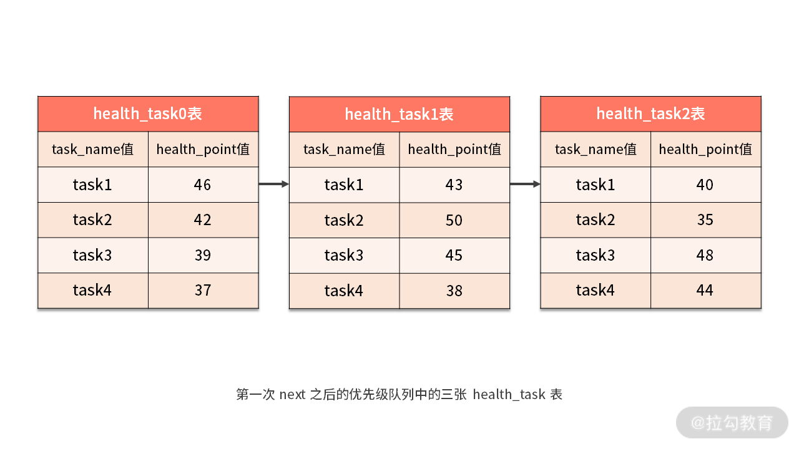

- 00 如何正确学习一款分库分表开源框架？.md.html
- 01 从理论到实践：如何让分库分表真正落地？.md.html
- 02 顶级项目：ShardingSphere 是一款什么样的 Apache 开源软件？.md.html
- 03 规范兼容：JDBC 规范与 ShardingSphere 是什么关系？.md.html
- 04 应用集成：在业务系统中使用 ShardingSphere 的方式有哪些？.md.html
- 05 配置驱动：ShardingSphere 中的配置体系是如何设计的？.md.html
- 06 数据分片：如何实现分库、分表、分库+分表以及强制路由？（上）.md.html
- 07 数据分片：如何实现分库、分表、分库+分表以及强制路由？（下）.md.html
- 08 读写分离：如何集成分库分表+数据库主从架构？.md.html
- 09 分布式事务：如何使用强一致性事务与柔性事务？.md.html
- 10 数据脱敏：如何确保敏感数据的安全访问？.md.html
- 11 编排治理：如何实现分布式环境下的动态配置管理？.md.html
- 12 从应用到原理：如何高效阅读 ShardingSphere 源码？.md.html
- 13 微内核架构：ShardingSphere 如何实现系统的扩展性？.md.html
- 14 分布式主键：ShardingSphere 中有哪些分布式主键实现方式？.md.html
- 15 解析引擎：SQL 解析流程应该包括哪些核心阶段？（上）.md.html
- 16 解析引擎：SQL 解析流程应该包括哪些核心阶段？（下）.md.html
- 17 路由引擎：如何理解分片路由核心类 ShardingRouter 的运作机制？.md.html
- 18 路由引擎：如何实现数据访问的分片路由和广播路由？.md.html
- 19 路由引擎：如何在路由过程中集成多种路由策略和路由算法？.md.html
- 20 改写引擎：如何理解装饰器模式下的 SQL 改写实现机制？.md.html
- 21 执行引擎：分片环境下 SQL 执行的整体流程应该如何进行抽象？.md.html
- 22 执行引擎：如何把握 ShardingSphere 中的 Executor 执行模型？（上）.md.html
- 23 执行引擎：如何把握 ShardingSphere 中的 Executor 执行模型？（下）.md.html
- 24 归并引擎：如何理解数据归并的类型以及简单归并策略的实现过程？.md.html
- 25 归并引擎：如何理解流式归并和内存归并在复杂归并场景下的应用方式？.md.html
- 26 读写分离：普通主从架构和分片主从架构分别是如何实现的？.md.html
- 27 分布式事务：如何理解 ShardingSphere 中对分布式事务的抽象过程？.md.html
- 28 分布式事务：ShardingSphere 中如何集成强一致性事务和柔性事务支持？（上）.md.html
- 29 分布式事务：ShardingSphere 中如何集成强一致性事务和柔性事务支持？（下）.md.html
- 30 数据脱敏：如何基于改写引擎实现低侵入性数据脱敏方案？.md.html
- 31 配置中心：如何基于配置中心实现配置信息的动态化管理？.md.html
- 32 注册中心：如何基于注册中心实现数据库访问熔断机制？.md.html
- 33 链路跟踪：如何基于 Hook 机制以及 OpenTracing 协议实现数据访问链路跟踪？.md.html
- 34 系统集成：如何完成 ShardingSphere 内核与 Spring+SpringBoot 的无缝整合？.md.html
- 35 结语：ShardingSphere 总结及展望.md.html
- 捐赠
25 归并引擎：如何理解流式归并和内存归并在复杂归并场景下的应用方式？
承接上一课时的内容，今天我们继续介绍 ShardingSphere 中剩余的归并策略，包括分组归并、聚合归并和分页归并。
- 其中分组归并是最复杂的一种归并类型；
- 聚合归并是在分组归并的基础上追加的归并；
- 分页归并则是典型的通过装饰器模式实现的归并类型。
最复杂的归并：分组归并
在 ShardingSphere 的所有归并机制中，分组归并的情况最为复杂，它同样可以分为流式分组归并和内存分组归并两种实现方案。
其中，流式分组归并要求 SQL 的排序项与分组项的字段，以及排序类型必须保持一致，否则只能通过内存归并才能保证其数据的正确性。
因为分组归并非常复杂，所以，我们还是继续通过一个示例然后结合源码，给大家介绍分组归并的实现过程，先看这样一句 SQL：
SELECT task_name, SUM(health_point) FROM health_task GROUP BY task_name ORDER BY task_name;
显然，上述 SQL 的分组项与排序项完全一致，都是用到了 task_name 列，所以取得的数据是连续的。这样，分组所需的数据全部存在于各个数据结果集的当前游标所指向的数据值，因此可以采用流式归并。
如下图所示，我们在每个 health_task 结果集中，根据 task_name 进行了排序：

我们先来看一些代码的初始化工作，回到 DQLMergeEngine，找到用于分组归并的 getGroupByMergedResult 方法，如下所示：
private MergedResult getGroupByMergedResult(final Map<String, Integer> columnLabelIndexMap) throws SQLException {
return selectSQLStatementContext.isSameGroupByAndOrderByItems()
? new GroupByStreamMergedResult(columnLabelIndexMap, queryResults, selectSQLStatementContext)
: new GroupByMemoryMergedResult(queryResults, selectSQLStatementContext);
}
可以看到这里有一个 isSameGroupByAndOrderByItems 判断，该判断就是用来明确分组条件和排序条件是否相同。根据前面的分析，如果分组条件和排序条件相同，则执行流式分组归并方式 GroupByStreamMergedResult，否则使用内存分组归并 GroupByMemoryMergedResult。
我们以流式归并为例来介绍 ShardingSphere 中的分组归并实现机制，在对代码进行详细展开之前，我们还是需要先从感性认识上明确流式分组归并具体要执行的步骤。这里仍然使用一系列的示意图来进行说明。
现在，我们已经在每个 health_task 结果集中根据 task_name 进行了排序，所以 health_task0、health_task1、health_task2 中的“task1”都排到了最前面，也就是队列的第一个元素。
- 第一次 next 调用
这样当进行第一次 next 调用时，排在队列首位的 health_task0 将会被弹出队列，并且将分组值同为“task1”其他结果集中的数据一同弹出队列。然后，在获取了所有的 task_name 为“task1”的 health_point 之后，我们进行了累加操作。
所以在第一次 next 调用结束后，取出的结果集是 “task1” 的分数总和，即 46+43+40=129，如下图所示：

- 第二次 next 调用
与此同时，所有数据结果集中的游标都将下移至“task1”的下一个不同的数据值，并且根据数据结果集当前游标指向的值进行重排序。在上图中，我们看到第二个“task2”同时存在于 health_task0 和 health_task1 中，这样包含名字为“task2”的相关数据结果集则排在的队列的前列。
当再次执行 next 调用时，我们获取了 “task2” 的分数并进行了累加，即 42+50=92，如下图中所示：

对于接下去的 next 方法，我们也是采用类似的处理机制，分别找到这三种 health_task 表中的“task3”“task4”“task5”等数据记录，并依次类推。
有了对流式分组归并的感性认识之后，让我们回到源代码。我们先来看代表结果的 GroupByStreamMergedResult，我们发现 GroupByStreamMergedResult 实际上是继承了上一课时中介绍的用于排序归并的 OrderByStreamMergedResult，因此也用到了前面介绍的优先级队列 PriorityQueue 和 OrderByValue 对象。
但考虑到需要保存一些中间变量以管理运行时状态，GroupByStreamMergedResult 中添加了如下所示的代表当前结果记录的 currentRow 和代表当前分组值的 currentGroupByValues 变量：
private final List<Object> currentRow;
private List<?> currentGroupByValues;
然后，我们来看一下 GroupByStreamMergedResult 的构造函数，如下所示：
public GroupByStreamMergedResult(
final Map<String, Integer> labelAndIndexMap, final List<QueryResult> queryResults, final SelectSQLStatementContext selectSQLStatementContext) throws SQLException {
super(queryResults, selectSQLStatementContext.getOrderByContext().getItems());
this.selectSQLStatementContext = selectSQLStatementContext;
currentRow = new ArrayList<>(labelAndIndexMap.size());
//如果优先级队列不为空，就将队列中第一个元素的分组值赋值给 currentGroupByValues 变量
currentGroupByValues = getOrderByValuesQueue().isEmpty()
? Collections.emptyList() : new GroupByValue(getCurrentQueryResult(), selectSQLStatementContext.getGroupByContext().getItems()).getGroupValues();
}
可以看到这里使用到了一个 GroupByValue 对象用于保存分组值，顾名思义，该对象的作用就是从结果集 QueryResult 中计算每个分组条件的值，如下所示：
public final class GroupByValue {
private final List<?> groupValues;
public GroupByValue(final QueryResult queryResult, final Collection<OrderByItem> groupByItems) throws SQLException {
groupValues = getGroupByValues(queryResult, groupByItems);
}
private List<?> getGroupByValues(final QueryResult queryResult, final Collection<OrderByItem> groupByItems) throws SQLException {
List<Object> result = new ArrayList<>(groupByItems.size());
for (OrderByItem each : groupByItems) {
//从结果集 QueryResult 中获得每个分组条件的值
result.add(queryResult.getValue(each.getIndex(), Object.class));
}
return result;
}
}
接下来，我们来看 GroupByStreamMergedResult 中的核心方法，即如下所示的 next 方法：
Override
public boolean next() throws SQLException {
// 清除当前结果记录
currentRow.clear();
if (getOrderByValuesQueue().isEmpty()) {
return false;
}
if (isFirstNext()) {
super.next();
}
//顺序合并相同分组条件的记录
if (aggregateCurrentGroupByRowAndNext()) {
// 生成下一条结果记录分组值
currentGroupByValues = new GroupByValue(getCurrentQueryResult(), selectSQLStatementContext.getGroupByContext().getItems()).getGroupValues();
}
return true;
}
这里出现了一个 aggregateCurrentGroupByRowAndNext 方法，从命名上可以看出该方法包含了分组聚合处理的核心处理逻辑，我们来看一下该方法的具体实现过程：
private boolean aggregateCurrentGroupByRowAndNext() throws SQLException {
boolean result = false;
//生成计算单元
Map<AggregationProjection, AggregationUnit> aggregationUnitMap = Maps.toMap(
//通过selectSQLStatementContext获取select语句所有聚合类型的项
selectSQLStatementContext.getProjectionsContext().getAggregationProjections(), new Function<AggregationProjection, AggregationUnit>() {
@Override
//通过工厂方法获取具体的聚合单元
public AggregationUnit apply(final AggregationProjection input) {
return AggregationUnitFactory.create(input.getType(), input instanceof AggregationDistinctProjection);
}
});
//循环顺序合并相同分组条件的记录
while (currentGroupByValues.equals(new GroupByValue(getCurrentQueryResult(), selectSQLStatementContext.getGroupByContext().getItems()).getGroupValues())) {
//计算聚合值
aggregate(aggregationUnitMap);
//缓存当前记录到结果记录
cacheCurrentRow();
//获取下一条记录，调用父类中的next方法从而使得currentResultSet指向下一个元素
result = super.next();
//如果值已经遍历完毕，则结束循环
if (!result) {
break;
}
}
//设置当前记录的聚合字段结果
setAggregationValueToCurrentRow(aggregationUnitMap);
return result;
}
这段代码不是很长，但几乎每段代码都很重要。首先看到这里通过 AggregationUnitFactory 工厂创建了一个聚合单元对象 AggregationUnit，从这个工厂方法中可以看到 ShardingSphere 目前所支持的所有聚合操作，如下所示：
public static AggregationUnit create(final AggregationType type, final boolean isDistinct) {
switch (type) {
case MAX:
return new ComparableAggregationUnit(false);
case MIN:
return new ComparableAggregationUnit(true);
case SUM:
return isDistinct ? new DistinctSumAggregationUnit() : new AccumulationAggregationUnit();
case COUNT:
return isDistinct ? new DistinctCountAggregationUnit() : new AccumulationAggregationUnit();
case AVG:
return isDistinct ? new DistinctAverageAggregationUnit() : new AverageAggregationUnit();
default:
throw new UnsupportedOperationException(type.name());
}
}
显然，ShardingSphere 所支持的聚合操作包括 MAX、MIN、SUM、COUNT 以及 AVG 五种。其中的 MAX 和 MIN 聚合查询需要使用 ComparableAggregationUnit，SUM 和 COUNT 需要使用 AccumulationAggregationUnit，而 AVG 需要使用 AverageAggregationUnit。
这些类都实现了 AggregationUnit 接口，该接口定义如下：
public interface AggregationUnit {
//合并聚合值
void merge(List<Comparable<?>> values);
//返回聚合值
Comparable<?> getResult();
}
AggregationUnit 提供了合并聚合值和获取聚合值这两个方法。那么这个 AggregationUnit 是用来干什么的呢？这就要来看一下前面 aggregateCurrentGroupByRowAndNext 代码流程中所包含的 aggregate 方法，如下所示，注意这里的代码做了裁剪，只突出了 AggregationUnit 的作用。
private void aggregate(final Map<AggregationProjection, AggregationUnit> aggregationUnitMap) throws SQLException {
for (Entry<AggregationProjection, AggregationUnit> entry : aggregationUnitMap.entrySet()) {
…
//计算聚合值
entry.getValue().merge(values);
}
}
显然，上述 aggregate 方法的核心就是调用 AggregationUnit 中的 merge 方法来完成聚合值的计算。针对今天课时中的示例 SQL，具体用到的 AggregationUnit 应该就是 AccumulationAggregationUnit。AccumulationAggregationUnit 类的实现也比较简单，可以想象它的 merge 方法就是将一系列传入的值进行求和，如下所示：
public final class AccumulationAggregationUnit implements AggregationUnit {
private BigDecimal result;
@Override
public void merge(final List<Comparable<?>> values) {
if (null == values || null == values.get(0)) {
return;
}
if (null == result) {
result = new BigDecimal("0");
}
result = result.add(new BigDecimal(values.get(0).toString()));
}
@Override
public Comparable<?> getResult() {
return result;
}
}
至此，ShardingSphere 中用于分组流式合并的 GroupByStreamMergedResult 类的主体内容就介绍到这里。
下面我们继续来看由分组归并引申出来的聚合归并。
追加的归并：聚合归并
事实上，通过前面的分析，我们已经接触到了聚合归并相关的内容，我们也是站在分组归并的基础上讨论聚合归并。在这之前，我们需要明确聚合操作本身跟分组并没有关系，即除了分组的 SQL 之外，对不进行分组的 SQL 也可以使用聚合函数。另一方面，无论采用的是流式分组归并还是内存分组归并，对聚合函数的处理都是一致的。聚合归并可以理解为是在之前介绍的归并机制之上追加的一种归并能力。
MAX、MIN、SUM、COUNT，以及 AVG 这 5 种 ShardingSphere 所支持的聚合函数可以分成三大类聚合的场景，MAX 和 MIN 用于比较场景，SUM 和 COUNT 用于累加的场景，而剩下的 AVG 则用于求平均值的场景。
在 sharding-core-merge工程中，包含了对聚合引擎的实现代码。我们已经在前面介绍聚合归并时给出了 AggregationUnit 接口以及用于计算聚合值的实现类AccumulationAggregationUnit。对于其他 AggregationUnit 实现类而言，我们也不难想象其内部的实现方法。
例如，以 AverageAggregationUnit 为例，它的 merge 方法和 getResult 方法如下所示：
public final class AverageAggregationUnit implements AggregationUnit {
private BigDecimal count;
private BigDecimal sum;
@Override
public void merge(final List<Comparable<?>> values) {
if (null == values || null == values.get(0) || null == values.get(1)) {
return;
}
if (null == count) {
count = new BigDecimal("0");
}
if (null == sum) {
sum = new BigDecimal("0");
}
count = count.add(new BigDecimal(values.get(0).toString()));
sum = sum.add(new BigDecimal(values.get(1).toString()));
}
@Override
public Comparable<?> getResult() {
if (null == count || BigDecimal.ZERO.equals(count)) {
return count;
}
return sum.divide(count, 4, BigDecimal.ROUND_HALF_UP);
}
}
以上代码的含义都比较明确，其他聚合类的实现方式也类似，我们不做具体展开。
接下来，我们继续介绍归并引擎中最后一种常见的应用场景，即分页归并。
需要装饰的归并：分页归并
从实现方式上讲，分页归并与前面介绍的排序归并和分组归并有所不同，而是采用了一种装饰器模式，即在排序和分组都完成了归并之后，再对结果进行分页处理。
在 DQLMergeEngine 中，装饰器方法 decorate 如下所示：
//使用装饰器模式对结果集进行分页归并
private MergedResult decorate(final MergedResult mergedResult) throws SQLException {
PaginationContext paginationContext = selectSQLStatementContext.getPaginationContext();
if (!paginationContext.isHasPagination() || 1 == queryResults.size()) {
return mergedResult;
}
//根据不同的数据库类型对相应的分页结果集执行归并
String trunkDatabaseName = DatabaseTypes.getTrunkDatabaseType(databaseType.getName()).getName();
if ("MySQL".equals(trunkDatabaseName) || "PostgreSQL".equals(trunkDatabaseName)) {
return new LimitDecoratorMergedResult(mergedResult, paginationContext);
}
if ("Oracle".equals(trunkDatabaseName)) {
return new RowNumberDecoratorMergedResult(mergedResult, paginationContext);
}
if ("SQLServer".equals(trunkDatabaseName)) {
return new TopAndRowNumberDecoratorMergedResult(mergedResult, paginationContext);
}
return mergedResult;
}
这里先判断是否要对结果进行分页归并，如果 PaginationContext 没有分页需求或者查询结果集只有一个，则不需要进行分页归并。如果需要分页归并，则根据三大类不同的数据库类型构建不同的装饰器归并结果对象 DecoratorMergedResult。
DecoratorMergedResult 是这三个具体分页归并实现类的基类，在 DecoratorMergedResult 中的各个方法，只是基于另一种 MergedResult 做了一层代理，例如如下所示的 getValue 方法：
private final MergedResult mergedResult;
@Override
public final Object getValue(final int columnIndex, final Class<?> type) throws SQLException {
return mergedResult.getValue(columnIndex, type);
}
接下来，我们来看一下针对 MySQL 或 PostgreSQL 的分页归并结果 LimitDecoratorMergedResult，该类继承自 DecoratorMergedResult。我们知道在 MySQL 中分页的实现方法就是找到目标起始行，然后再通过 LIMIT 关键字设置所需要获取的行数，典型的分页 SQL 如下所示：
SELECT * FROM user WHERE user_id > 1000 LIMIT 20;
因为前面通过分组和排序实际上已经获取了所需的结果集合，因此对于分页而言，主要工作就是获取这个目前起始行，或者说偏移量 Offset。在 LimitDecoratorMergedResult 中，需要通过如下所示的 skipOffset 方法来计算这个偏移量：
private boolean skipOffset() throws SQLException {
for (int i = 0; i < pagination.getActualOffset(); i++) {
if (!getMergedResult().next()) {
return true;
}
}
rowNumber = 0;
return false;
}
这里根据 PaginationContext 分页上下文对象中的 getActualOffset 方法获取真实偏移量，然后循环调用父类 MergedResult 的 next 方法来判断是否能够达到这个目标偏移量，如果能够则说明该分页操作是可行的。
然后，我们来看 LimitDecoratorMergedResult 的 next 方法，如下所示：
@Override
public boolean next() throws SQLException {
if (skipAll) {
return false;
}
if (!pagination.getActualRowCount().isPresent()) {
return getMergedResult().next();
}
return ++rowNumber <= pagination.getActualRowCount().get() && getMergedResult().next();
}
这个方法实际上就是执行了 LIMIT 关键词的逻辑，对获取的 rowNumber 增加计数然后与目标行数进行比对，并流式返回数据。
至此，关于 DQLMergeEngine 中五大类归并引擎的介绍就到此为止。
从源码解析到日常开发
在今天的内容中，我们再次看到了装饰器模式的强大作用。相比较改写引擎中基于 SQLRewriteContext 所使用的装饰器模式，ShardingSphere 在分页归并中使用装饰器的方式更加简单直接。
我们直接在前一个 MergedResult 上调用一个显式的 decorate 方法来完成对结果的装饰。这种装饰器模式的应用方法的关键点在于，我们需要设计一套类似 MergedResult 的完整类层结构，确保在装饰之前和装饰之后，各个装饰类能够在同一套体系中进行不断流转。
而改写引擎中装饰器的使用要点，则是把需要装饰的信息都放在一个上下文对象中。
在日常开发过程中，这两种装饰器模式的实现方法都值得我们进行借鉴。
小结与预告
今天的内容围绕着 ShardingSphere 中比较复杂的集中归并类型展开了详细的讨论。
其中分组归并是最复杂的归并类型，在介绍分组归并时，我们也引出了聚合相关的概念和实现方法，所以聚合归并可以认为是在分组归并上追加的一种归并类型，而分页归并的实现需要考虑不同数据库类型，ShardingSphere 在实现分页归并时同样采用了装饰器模式适配了不同数据库分页机制上存在的差异性。
最后这里给你留一道思考题：ShardingSphere 如何使用装饰品模式完成了对不同数据库的分页归并策略？
到今天为止，我们已经对 ShardingSphere 中分片引擎的五大引擎的内容进行了详细的介绍。在下一课时中，我们将关注于主从架构下读写分离机制的实现原理。
© 2019 - 2023 Liangliang Lee. Powered by gin and hexo-theme-book.